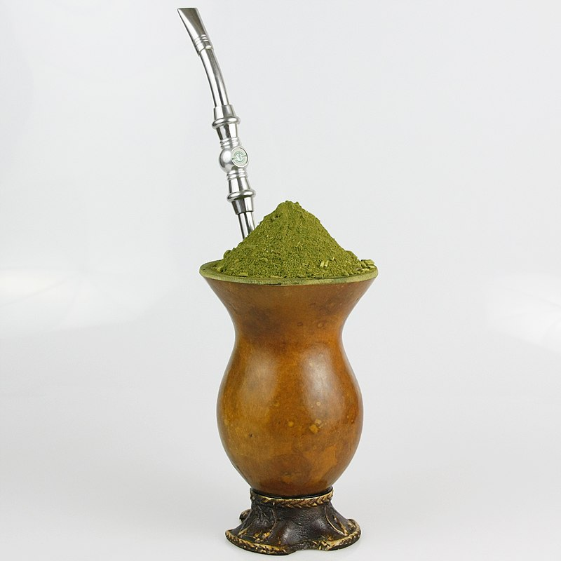

A Culinária de nosso folclore
Nosso folclore não é somente composto por lendas e festas, também é feito da nossa culinária, que é rica, diversa e cheia de sabores únicos, ela é um reflexo das influências culturais dos povos indígenas, africanos, europeus entre outro povos que contribuíram para a formação de nossa identidade cultural.
Feijoada
Um dos pratos mais famosos do Brasil, a feijoada é feita com feijão preto e uma variedade de carnes, servida com arroz, farofa e laranja. É um prato que reflete a influência africana na nossa cozinha.

Vatapá
Típico da Bahia, o vatapá é um prato cremoso feito com pão, leite de coco, camarão, amendoim e azeite de dendê. É uma delícia cheia de sabores marcantes!

Pamonha
Um prato típico das festas juninas, a pamonha é feita de milho e pode ser doce ou salgada. É muito popular em todo o país, especialmente nas regiões Centro-Oeste e Nordeste.

Tacacá
Típico da região Norte, o tacacá é uma iguaria feita com tucupi, goma de mandioca, camarão e jambu, uma erva que causa uma leve dormência na boca.

Acarajé
O acarajé é um bolinho de feijão-fradinho frito em azeite de dendê, recheado com vatapá e camarão. É um símbolo da culinária baiana e de origem africana.

Chimarrão
Bebida típica da região Sul, o chimarrão é feito com erva-mate e água quente, representando a tradição gaúcha e a hospitalidade da região.
